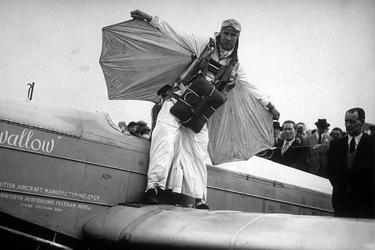
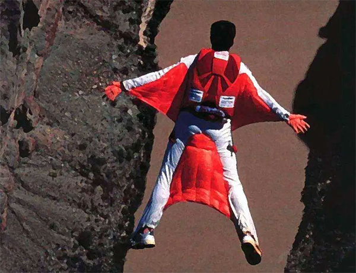
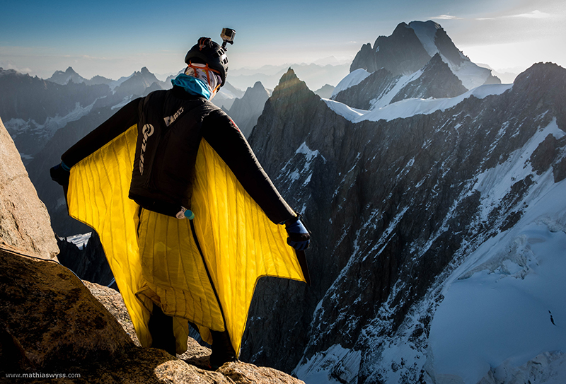
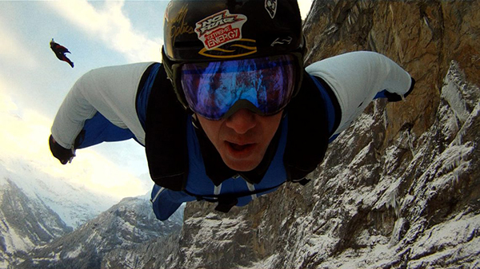
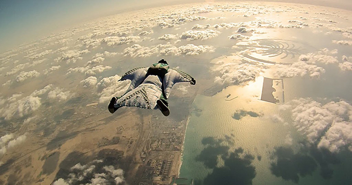
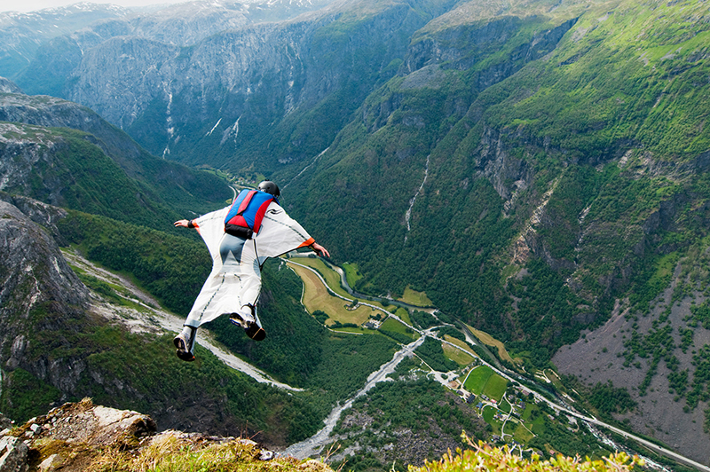
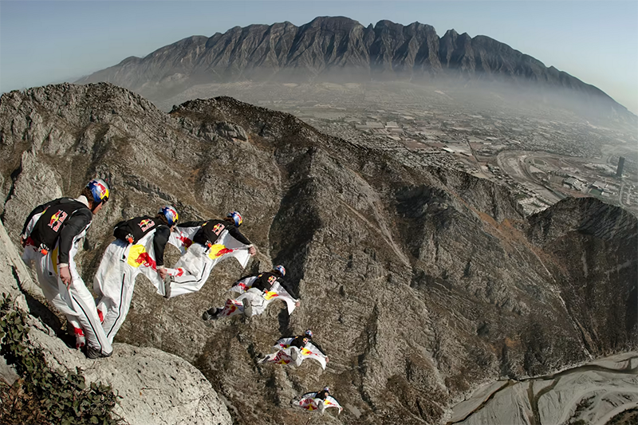
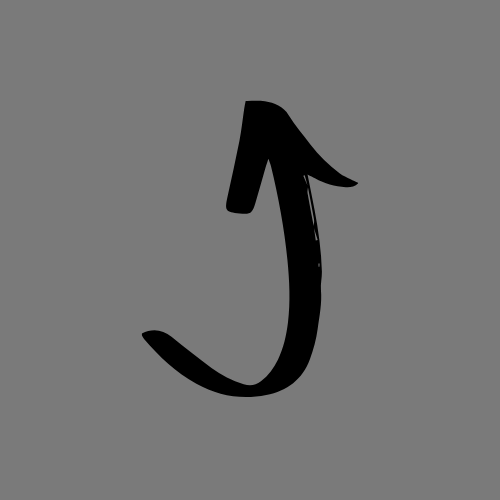

Le vol en wingsuit ou vol en combinaison ailée est un type de saut effectué à l'aide d'une combinaison de saut souple en forme d'aile. Cette dernière est utilisée dans les sports extrêmes, notamment par des parachutistes, pour modifier l'écoulement de l'air sur leur corps afin d'augmenter la portance.
Ces combinaisons se gonflent d'air dès que le parachutiste se lance du haut d'une falaise ou sort de l'avion. Elles permettent de réduire leur vitesse de chute en la convertissant en vitesse horizontale. Un vol en wingsuit se termine par l'ouverture d'un parachute.
Lorsqu'il est combiné au BASE jump, le vol en wingsuit est une pratique dangereuse.

Des ailes sont utilisées depuis le printemps 1935 par le parachutiste américain Clem Sohn afin de tenter d'augmenter le mouvement horizontal. Ces premières wingsuits sont faites de toile, de bois, de soie, d'acier, voire d'os de baleine. Il développe ses ailes de 1935 à 1937, cherchant à augmenter au maximum leur surface. Cette sorte de « combinaison palmée » ralentit sa chute libre, commencée à 10 000 pieds, et il conclut son vol plané en ouvrant son parachute. Clem Sohn se tue lors d'un meeting à Vincennes en 1937, victime d'une double torche.

D'autres lui succèdent ; parmi ceux-ci l'on peut citer Harry Ward, Léo Valentin, Gil Delamare, les frères Masselin, Salvatore Cannarozzo. Peu survécurent à leurs expérimentations : bien souvent les parties rigides furent directement ou indirectement fatales, à l'origine soit d'emmêlements de suspentes lors des phases d'ouverture du parachute, soit de ruptures, créant une dissymétrie et une autorotation (cas pour Léo Valentin).
Au début des années 1990, Patrick de Gayardon alias « Deug » reprend le concept de manière plus scientifique, évitant de répéter les erreurs du passé, et crée une wingsuit qui se gonfle avec la pression de l'air, disposant ainsi d'un intrados et d'un extrados, et possédant une finesse comprise entre 2 et 3 (2 à 3 mètres parcourus horizontalement pour 1 mètre de chute verticale).
Le 31 octobre 1997, Patrick de Gayardon présente à la presse une wingsuit avec un vol à proximité de l'aiguille du Midi, dans le massif du Mont-Blanc. "Deug" parviendra également à remonter dans le Pilatus qui l'avait largué, et sera le premier à sauter en BASE jump équipé d'une wingsuit. Disparu tragiquement à Hawaï en 1998 lors d'un saut en wingsuit, il est unanimement reconnu comme le père de la wingsuit moderne.

Au début de l'année 1998, Tom Begic vole avec sa propre wingsuit conçue à partir du modèle de Gayardon.
À partir d'un avion (parachutisme conventionnel), le saut en Wingsuit rend plus difficile les procédures d'urgence, pour cette raison, il est réservé aux parachutistes confirmés (plus de 150 sauts, assortis d'un brevet de Parachutiste Autonome appelé BPA). Certaines combinaisons comme la Access facilitent la transition depuis la chute libre tout en réduisant les risques (retour à plat facilité, accès aux poignées de libération et réserve).
En paralpinisme (BASE jump depuis une falaise), le vol en wingsuit est connu pour augmenter encore la technicité du saut (mauvaise appréciation de l'altitude, risque d'instabilité majoré, goût pour la proximité). Dans les années 2010, il coûte la vie chaque année en moyenne à une vingtaine de base-jumpers dans le monde entier. Le 5 octobre 2003, les parachutistes et BASE jumpers Jeb Corliss et Dwain Weston (en) effectuent un saut en wingsuit ensemble, prévoyant d'exécuter une figure près du Royal Gorge Bridge dans le Colorado. Weston calcule mal la force du vent et sa distance par rapport au pont. Il entre en contact violemment avec ce dernier à une vitesse estimée à environ 160 km/h et meurt sur le coup.
Il est indispensable de maîtriser parfaitement le vol depuis un avion avant de se lancer depuis une falaise. À ce sujet, l'Association de paralpinisme recommande d'effectuer au minimum 200 sauts en falaise, en plus des 300 à 400 sauts préalables en avions, avant de se lancer en wingsuit.



La vitesse d'avancement moyenne d'une wingsuit est d'environ 160 kilomètres par heure.
Pami les personnalités du vol en wingsuit, on trouve :
Interview des Soul Flyers, les maitres des airs !

| Date | Nom(s) | Record |
|---|---|---|
| juillet 2008 | Heather Swan et Glenn Singleman | Plus haut saut en wingsuit (11,27km) |
| mai 2011 | Shin Ito | Plus long vol en wingsuit couvrant une distance de 23,1 km |
| mai 2012 | Gary Connery | Premier vol wingsuit avec posé sans ouverture du parachute (amorti par 18 000 boîtes de carton) |
| avril 2014 | Vince Reffet et Fred Fugen | Saut du haut des 828 mètres de la plus haute tour du monde, le Burj Khalifa |
